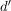
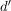
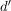

topologisch äquivalente Semimetrik
1. Definition
Sei  eine Menge und
eine Menge und  Semimetriken auf .
Semimetriken auf .
 und  sind äquivalent zu einandre, falls sie die gleiche Topologie induzieren
und  sind äquivalent zu einandre, falls sie die gleiche Topologie induzieren
Sei eine Menge und Semimetriken auf .
und  sind äquivalent zu einandre, falls sie die gleiche Topologie induzieren